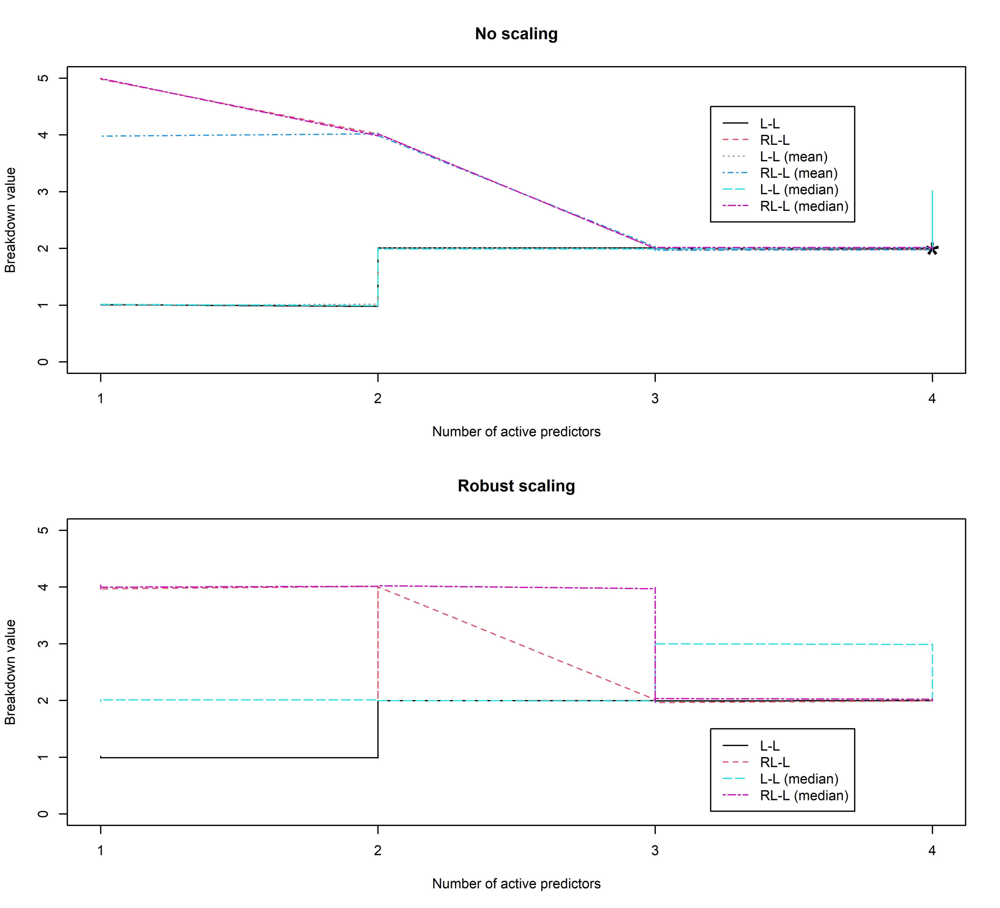
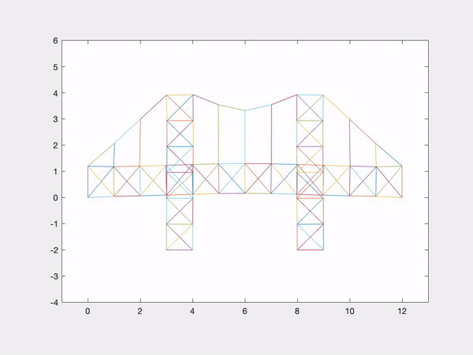
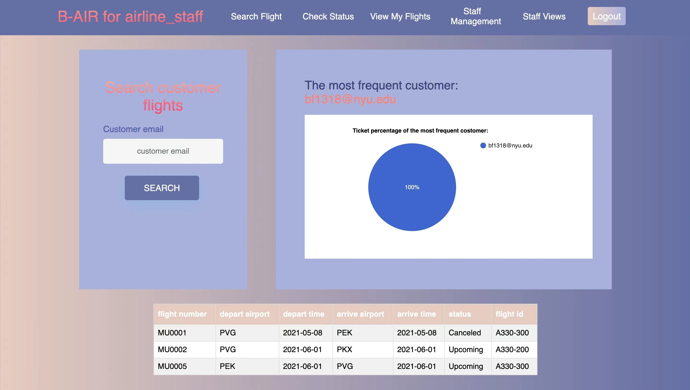

The Conditional Breakdown Properties of LAD-LASSO Regression
Honors Thesis

Jupyter Notebook

Monte Carlo Methods
2022 Fall Graduate Monte Carlo Methods
Jupyter Notebook


Face Mask Detection
Spring 2022 Machine Learning Project
Jupyter Notebook
Computers in Biology and Medicine
2022 Spring Computers in Biology and Medicine Projects
MATLAB
Modeling and Simulation
Fall 2021 Special Topics

MATLAB
Air Ticket Reservation System
2021 Spring Databases Project

HTML
Chat System
2020 Spring Intro to Computer Science Project
Python
Machine Learning
2022 Spring Machine Learning
Jupyter Notebook
Optimization
2022 Fall Linear and Nonlinear Optimization
Julia
bernicefeng.github.io
HTML